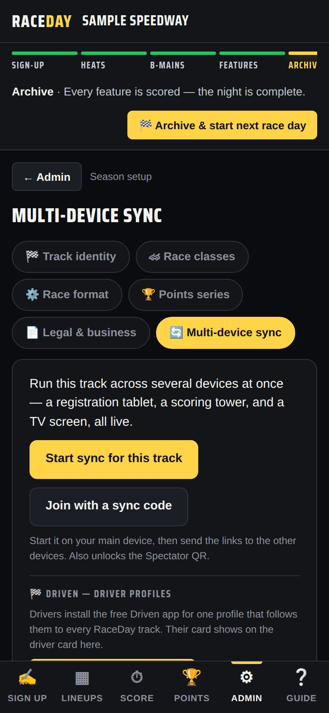
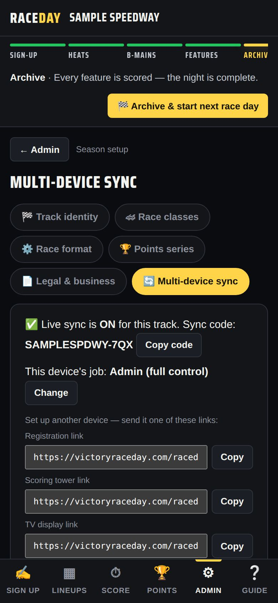
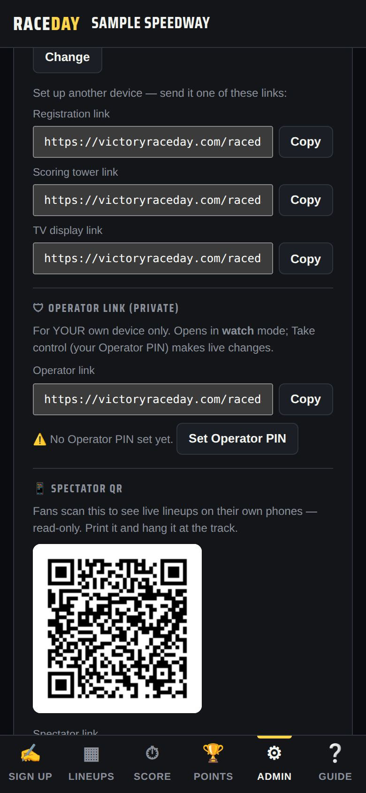

-
Start sync on your main device
On the admin device, open Admin → Season setup → Multi-device sync and tap Start sync for this track. Pick a sync code — every device for your track uses the same one, so make it unique to your track.

Multi-device sync — off -
Check sync is on
The card now says “Live sync is ON” with your sync code, and shows this device's job — Admin (full control).

Sync is on -
Send a link to each device
Under “Set up another device” are three links: Registration link, Scoring tower link and TV display link. Tap Copy and text or email each one to the device that will do that job.

One link per job -
Open the link on each device
Opening a link connects that device and gives it its job:
- Registration — only the Sign up tab
- Scoring tower — Lineups, Score and Points
- TV display — opens the TV view by itself
If that device already had its own data, it warns that it will be replaced by the shared race — only say OK if that's what you want. You can also use Join with a sync code and type the code instead.

A scoring tower device -
Watch the sync badge
The top of each device shows ◉ Synced when it's connected. ○ Offline means it lost the connection — keep working, and it catches up when it's back.
-
Change a device's job
In the sync card, tap Change next to “This device's job” and type admin, register, scoring, tv, or operator.
-
Your own phone: the Operator link
The 🛡 Operator link (private) is for your own phone. It opens in watch mode so you can follow the night anywhere; Take control with your Operator PIN to make live changes. Set the PIN with Set Operator PIN.
-
If devices disagree
On the admin device, Make this device the source of truth pushes its race to every other device.
Good to know
- What syncs: driver names, numbers, lineups and results. Your admin PIN, license, and race history stay on each device.
- Sync needs internet. Without it each device keeps working on its own and catches up later.
- Turning sync on also unlocks the fan QR code and kiosk mode — see Fans & TV.
- To stop: Turn off sync on this device. The shared race stays in the cloud.
Next guides
Still stuck? The Field Manual walks through every screen, and the FAQ covers common questions. Or just ask.
Email a question →